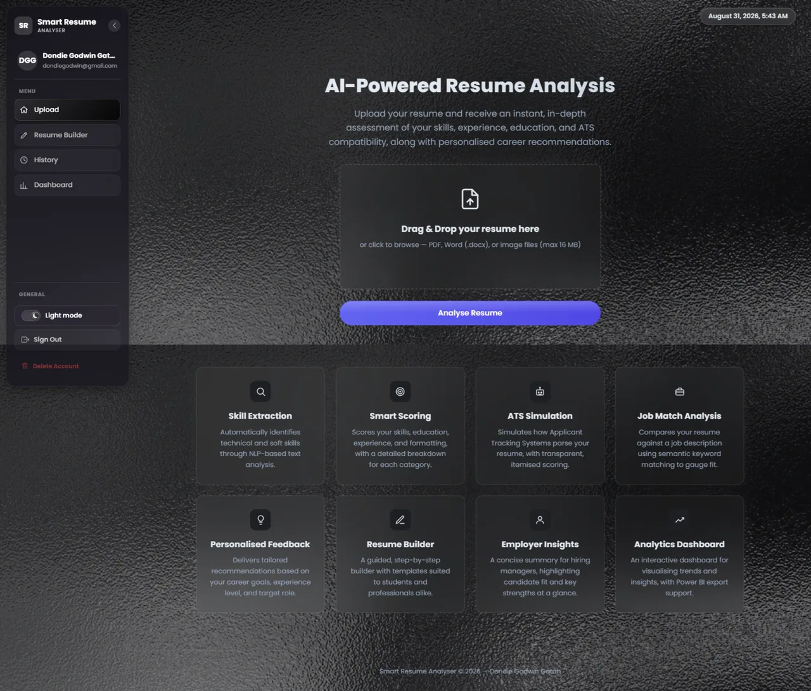
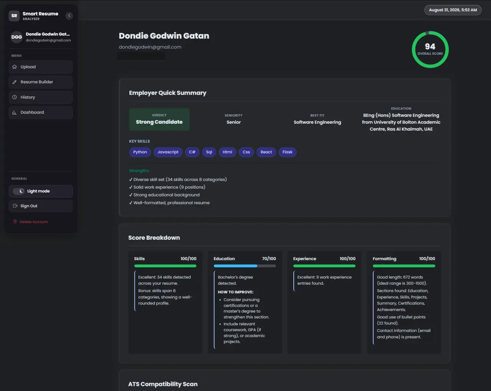
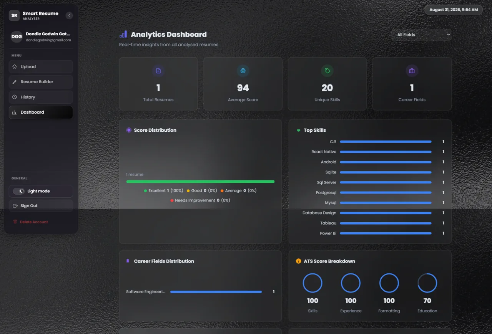
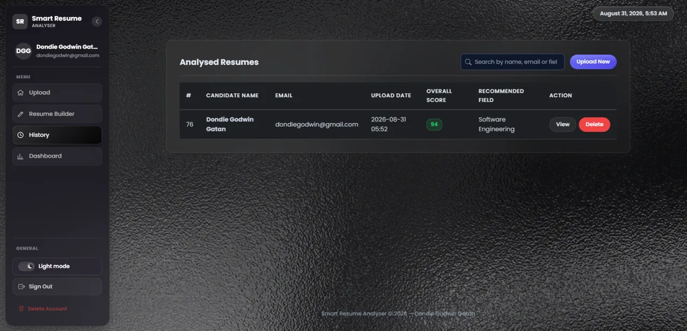
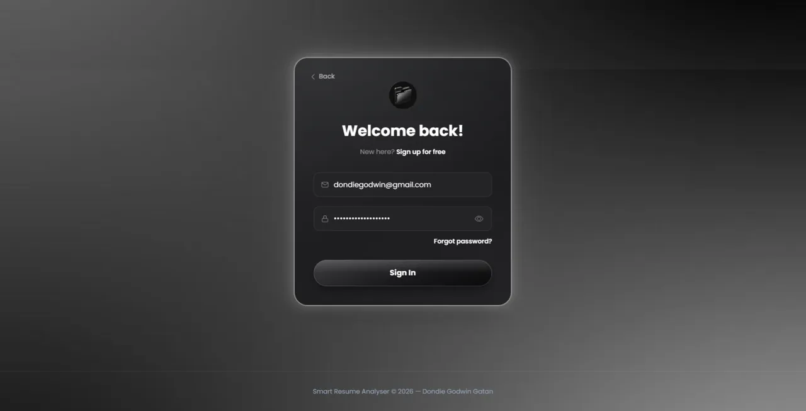

Smart Resume Analyser
AI-assisted resume scoring, feedback, and job-matching platform
Upload a PDF or scanned resume and get an OCR + NLP score, an ATS-compatibility check, job-description matching, and an in-app Gemini assistant.
How to try it
Create a free account (no email confirmation) and upload any resume.
The live demo is paused for now (free-hosting monthly limit). Please watch the demo video; it will be back online soon.
View detailsHide details
A full-stack Flask application that takes a candidate's PDF or scanned-image resume, extracts its text via OCR and PDF parsing, and analyses it with NLP to produce a scored, section-by-section breakdown — skills, education, experience, and formatting — with an ATS-compatibility check and concrete suggestions for improvement. It also matches a resume against a pasted job description, generates personalised career feedback, and surfaces trends across every resume analysed on an analytics dashboard. A guided resume builder lets users compose one from scratch with structured, repeatable work-experience and education entries, an in-app AI assistant (Google Gemini) that reviews the draft for gaps and rewrites weak sections on request, and one-click export to a genuinely ATS-parseable PDF with real embedded text rather than a rasterised image. Deployed on Render's free tier against an isolated Postgres schema (Neon) — the first request after a period of inactivity can take up to a minute to wake the instance.





- OCR + PDF text extraction (PyMuPDF, Tesseract) so both scanned images and native PDFs work
- NLP-driven skill extraction and section scoring (NLTK tokenisation, stopword filtering, tagging)
- ATS-compatibility simulation with a transparent, explainable scoring breakdown
- Job-description matching to rank a resume's fit against a specific role
- Personalised feedback generation based on career goal, experience level, and target role
- Guided resume builder with an in-app AI assistant (Google Gemini) that flags gaps in the draft and applies suggested rewrites in one click
- Native-text PDF export — real embedded text via direct PDF drawing, not a rasterised image, so builder output is actually machine-readable by real ATS software
- Auth system with email-based password reset (SendGrid) and per-user history
- Analytics dashboard (score distribution, top skills, career-field breakdown) with CSV/JSON export for Power BI